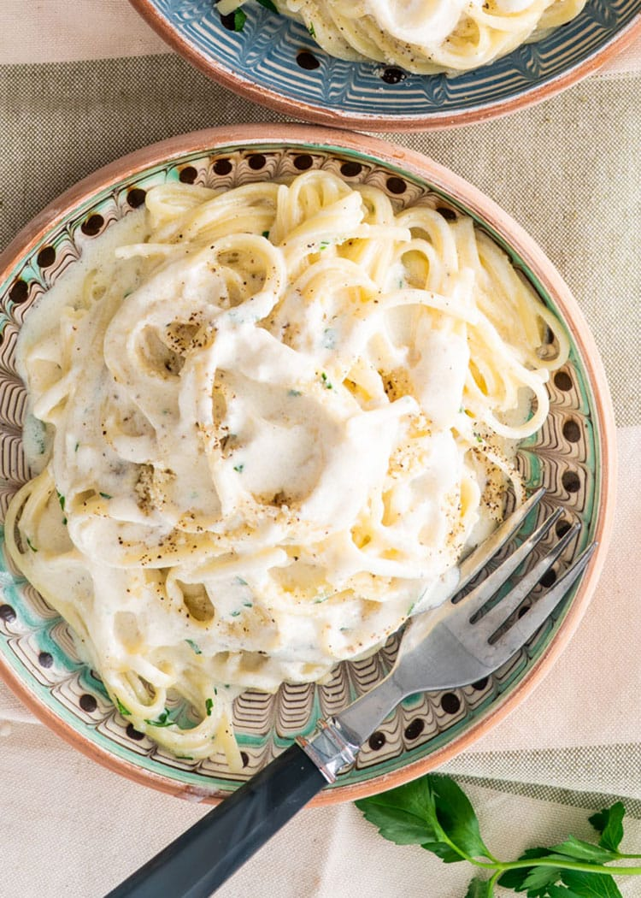

Alfredo Pasta

Description
This alfredo pasta is a rich, creamy dish that is both filling and easy to make. Not only is the pasta good by itself, but it can also be paired with sides like garlic bread or salad. It can be further enriched by adding additional ingredients like grilled chicken or herbs.
Ingredients
- 24 ounces dry fettucine pasta
- 1 cup butter
- 3/4 pint heavy cream
- salt and pepper to taste
- 1 dash garlic salt
- 3/4 cup grated Romano cheese
- 1/2 cup grated Parmesan cheese
Instructions
- Bring a large pot of salted water to a boil.
- Add fettucine and cook for 8 to 10 minutes; drain.
- Melt butter into cream in a large saucepan over low heat. Add salt, pepper, and garlic salt. Increase heat to medium, stir in grated Romano and Parmesan until melted and sauce has thickened.
- Add cooked pasta to sauce, toss until thoroughly coated, and serve.